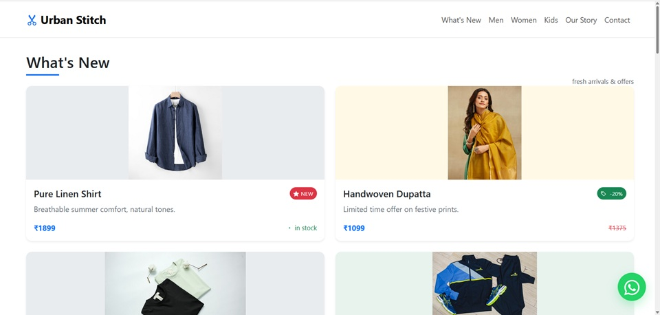
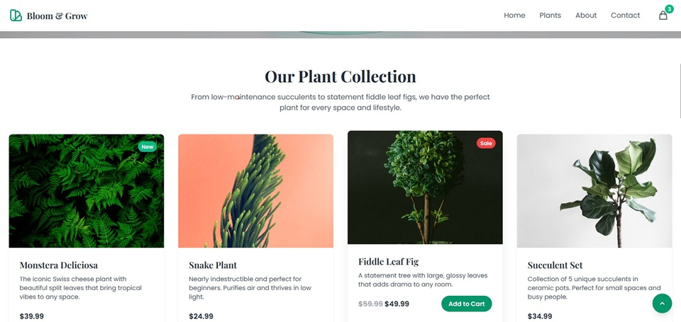
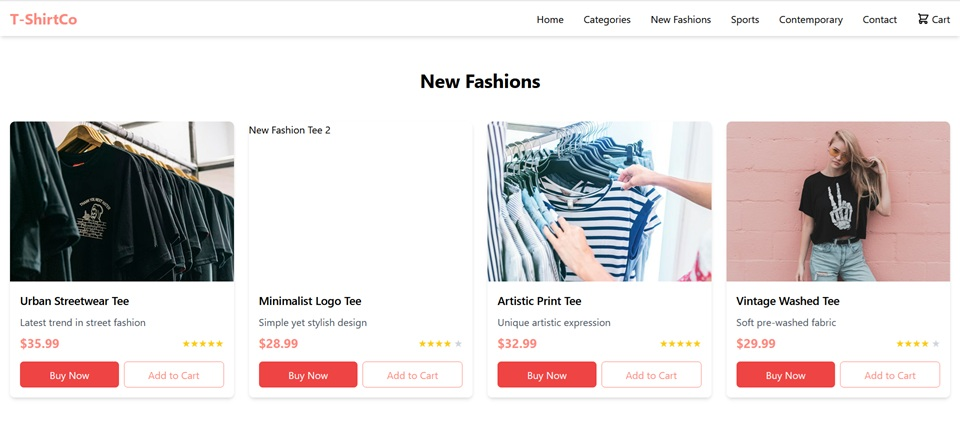

What are the five stages of a retail web presence?
The five stages are (1) a brochure website, (2) a full commerce website, (3) a website integrated with existing business processes, (4) a webified store, and (5) a website integrated with manufacturer systems. Each stage adds capabilities and connections, allowing a retailer to expand online in step with its operational readiness.
Brochure website
Introduce the business, showcase a few products, and direct customers to a store or enquiry channel.
Commerce website
Sell online with customer support, without necessarily connecting sales to internal systems.
Integrated processes
Connect the website to buying, inventory, and accounting workflows.
Webified store
Bring web information and product access into store terminals and assisted selling.
Manufacturer integration
Coordinate product information, replenishment, and fulfilment with manufacturers.
Stage 1: Brochure website
A brochure website is a quick, relatively low-cost way for a retailer to establish a web presence and test whether customers are interested in buying online. It may list a few products, but its main purpose is to introduce the business and guide shoppers to a nearby store or a direct contact channel. If demand grows, the retailer can add online selling and move toward Stage 2.
A small retailer can build this site with a no-code website builder such as Wix, Webflow, or Shopify, or use a custom HTML, CSS, and JavaScript template hosted on GitHub Pages or Netlify. A WhatsApp Business account can also serve as a simple product showcase and enquiry channel.
At this stage, avoid investing in a complete e-commerce system before there is evidence that customers want to order online. Keep the first version focused: explain what the business sells, show representative products, and make it easy to visit or contact the store.
Stage 2: Commerce website
At Stage 2, the retailer supports full-scale online selling and provides customer service information. The website can also tell shoppers about the retailer's history and community involvement. However, it is not yet integrated with the business's internal information systems.
Without an inventory connection, a customer may place an order only to learn later that the product is out of stock. The retailer needs to manage this gap through clear availability information and a reliable order-support process until systems are connected.
Stage 3: Website integrated with existing processes
At Stage 3, the website connects to core business processes such as buying, inventory, and accounting. Shared information reduces the need to create separate reports and helps keep online product availability aligned with the retailer's operations.
For example, when an item is no longer available, inventory data can update the website so that shoppers are not encouraged to order an out-of-stock product. The exact automation depends on the systems and integrations the retailer has in place.
Stage 4: The “webified” store
A webified store brings networked web capabilities into physical retail locations. Browser-based point-of-sale kiosks or store terminals can help staff and customers find products beyond the stock carried at that particular branch.
Depending on the retailer's setup, store systems can help to:
- Offer products that are not stocked in the current store.
- Direct customers to another branch where an item is available.
- Support web-assisted sales with staff help.
- Show useful product information from manufacturer websites.
Stage 5: Website integrated with manufacturer systems
At Stage 5, the retailer's website connects with manufacturer systems to bring together the information needed for collaborative sales. This can support closer coordination between the retailer and its suppliers.
For example, manufacturers may automatically replenish fast-selling products, and—if the retailer chooses—ship orders directly to consumers. These capabilities depend on agreed processes, system connections, and fulfilment arrangements between the retailer and manufacturer.
Low-budget platform options for a Stage 1 brochure website
Choose a platform based on how much content you need, how comfortable you are maintaining a website, and whether you may add e-commerce later. These are options to evaluate, not a requirement to use every service.
-
Shopify
Best overall for beginners
An all-in-one e-commerce platform for product listings, shopping carts, checkout, order management, customer support integrations, and store information pages.
Best for: launching a full online store with minimal coding.
-
WooCommerce
An e-commerce plugin for WordPress that provides product management, shopping carts, orders, payment integrations, and extensions for customer service and inventory.
Best for: businesses wanting greater website customization and control.
-
Wix
A visual website builder with e-commerce functionality, drag-and-drop design, product pages, checkout, and business information pages.
Best for: a visually appealing store without much technical setup.
-
Ecwid
by Lightspeed
Lets businesses add online-store functionality to an existing website or build a storefront with product listings, checkout, and order management.
Best for: adding commerce features to an existing website.
-
Webflow
A visual website-design platform offering detailed layout and styling control, with e-commerce features depending on the current plan and supported integrations.
Best for: design-focused storefronts and branded product experiences.
Recommended setup for a Stage 1 retail website
Keep the initial website focused on helping shoppers understand the business, browse a small selection, and take the next step. Add more complex commerce features only when they serve a tested customer need.
| Requirement | Suggested implementation |
|---|---|
| Homepage and business introduction | Use Carrd, Google Sites, Hostinger, WordPress, or another builder to explain what the store offers. |
| Small product catalogue | Show selected products with clear images, descriptions, and prices. State that availability may change. |
| Store locator | Provide the store address, phone number, and a Google Maps directions link or embedded map. |
| Customer enquiries | Offer WhatsApp Business or a simple contact form and make response expectations clear. |
| Test demand | For a few products, consider a payment link or simple checkout if fulfilment and stock can be managed. |
| Website performance | Use a privacy-appropriate analytics tool, such as Google Analytics where suitable, and disclose tracking as required. |
Checkout HTML/CSS/Bootstrap Templates
Store
templates

Product Catalogue templates

Minimal ( 4 Products in a Row )
Minimalistic design, 4 products in a row. Suitable for cloths, stationaries or other related products
view Demo →
Minimal ( 2 Products in a Row )
Minimalistic design, 2 products in a row. Suitable for jewelleries, Crafts, Medicines or other related products.
view Demo →

Textiles Ecommerce Template
Cloths are shown in different categories. On clicking a product card it will redirect to it's details page
view Demo →Example customer journey on a brochure website
A simple Stage 1 website should make the next step clear from discovery to store visit or enquiry:
- Discover a product: The customer arrives on the brochure website through a search, shared link, or social post.
- Review product information: They see images, price, and a description, together with an availability disclaimer if stock is not updated in real time.
- Find the nearest store: They open map directions or use the listed phone number to check details.
- Ask or take action: They call or send a WhatsApp enquiry, visit the store, or use an available payment link.
Stage 2 :
Commerce Web site
What Are the Best Tools and Platforms for
Building a Stage 2 E-commerce Website?
For your Stage 2 e-commerce website, the goal is to build a complete online store where customers can browse products, place orders, contact customer support, and learn about the retailer and its community activities. The key limitation in your description is that the website is not integrated with the retailer’s internal information systems. This means inventory may not be updated in real time, so customers could order products that are out of stock. You can implement this stage using no-code platforms, hosted e-commerce services, or a custom-coded website.
- Shopify:
Best overall for beginnersAn all-in-one e-commerce platform for product listings, shopping carts, checkout, order management, customer support integrations, and store information pages. Best for: launching a full online store with minimal coding.
- WooCommerce: An e-commerce plugin for WordPress that provides product management, shopping carts, orders, payment integrations, and extensions for customer service and inventory. Best for: businesses wanting greater website customization and control.
- Wix: A visual website builder with e-commerce functionality, drag-and-drop design, product pages, checkout, and business information pages. Best for: a visually appealing store without much technical setup.
- Ecwid by Lightspeed: Lets businesses add online-store functionality to an existing website or build a storefront with product listings, checkout, and order management. Best for: adding commerce features to an existing website.
- Webflow: A direct A visual website-design platform offering detailed layout and styling control, with e-commerce features depending on the current plan and supported integrations. Best for: design-focused storefronts and branded product experiences
- Custom HTML, CSS, and JavaScript: A lightweight template can be hosted on platforms such as GitHub Pages or Netlify when the retailer can maintain its own content and code.
Additional no-code tools for specific features
Keep the initial website focused on helping shoppers understand the business, browse a small selection, and take the next step. Add more complex commerce features only when they serve a tested customer need.
| Requirement | Suggested Tool | Purpose |
|---|---|---|
| Customer support | Tawk.to | Live chat and support widget |
| WhatsApp enquiries | WhatsApp Business | Customer questions and order communication |
| Email marketing | Brevo | Promotional emails and customer updates |
| Forms and enquiries | Tally | Contact forms and customer feedback |
| Store information | WordPress | About, history, policies, and community pages |
| Workflow automation | Make | Connect supported apps and automate workflows |
These tools can supplement an e-commerce platform. Some features or integrations may require paid plans.
How to address the out-of-stock problem
The main weakness in your Stage 2 description is the lack of integration with internal information systems. There are several ways to address it.
- Option A — Manual stock
updates:
The store owner updates product quantities in the website dashboard whenever stock changes. Suitable for small stores with limited products and sales.
- Option B — Built-in inventory management:
The platform reduces stock quantities when orders are placed and disables purchases when items are unavailable. Suitable for stores using Shopify, WooCommerce, Wix, or Ecwid with inventory tracking configured.- Option C — Integrate the existing inventory system:
Connect the online store to the retailer's POS, ERP, or inventory software through a supported integration or API. Best for businesses selling through both physical and online stores.
For example, Shopify supports inventory tracking and configurable out-of-stock behaviour. Wix also supports automatic quantity tracking, and Ecwid can prevent customers from purchasing products whose tracked stock reaches zero.Stage 3: Website Integrated with Existing ProcessWhat Are the Best Tools and Platforms for Building a Stage 3 E-commerce Website Integrated with Existing Business Systems?The site is integrated with the firm’s buying, inventory, and accounting systems. That lessens the need to have separate reports and ensures that out-of-stock items are automatically deleted from the site.
Stage 3 goes beyond a normal e-commerce website. The website is connected to the company's purchasing, inventory, sales, and accounting systems, reducing duplicate data entry and keeping business records synchronized.
For example, when a store sells its last item, the inventory system updates the available quantity and the website stops accepting orders for that product. Sales and invoice information can also flow into the accounting system.Recommended setup for a Stage 3 retail website
- Odoo - Best all-in-one option : Combines e-commerce, purchasing, inventory, sales, invoicing, accounting, and point-of-sale capabilities within one business platform. This can reduce the need for separate integrations between multiple applications.
- Shopify + ERP: Shopify, Odoo integration guide Shopify manages the online store, while an ERP such as Odoo manages business operations. Their connector can synchronize products, stock, orders, deliveries, returns, and accounting-related records.
- WooCommerce + Odoo : WooCommerce, Integration documentation WooCommerce handles the storefront, and Odoo handles inventory, purchasing, orders, and accounting. A connector synchronizes relevant data between the two systems
- Microsoft Dynamics 365 Business Central: An ERP platform for managing financials, purchasing, inventory, and sales. It can be connected to a suitable e-commerce platform through available connectors or custom integrations. Best for: businesses needing more structured financial and operational management.
No-code tools for connecting business systems
If the retailer already uses separate applications, integration tools can help connect them without building every connection from scratch.
A practical starter checklist for a low-budget retail website. Tool How it helps Make Connects supported apps and automates workflows when orders, stock, or other records change.. Zapier Automates tasks such as sending order details to accounting or notifying staff about low stock. n8n Builds visual automation workflows; supports API integrations and more advanced customization.. Zoho Inventory Manages inventory, sales orders, purchase orders, and related business operations; can connect with supported sales channels.. Stage 4: Building the “Webified” StoreNetwork systems bring web connectivity to browser-based point-of-sale kiosk, or store terminals. This lets the retailer sell items that are not being carried in a given store, directs customers to the items at other stores where they are available, enables Web-assisted sales, and provides information from manufacturer web sites.
Best tools for Implementing Stage 4: The “Webified” Store
The key concept is omnichannel retailing with an endless aisle. A customer visiting a physical store can browse the retailer's full online catalogue, find products stocked at other branches or warehouses, and order products that aren't physically available in that store. Here are the most relevant platforms for implementing this model.
- Shopify POS : A good option for retailers who want their online store and physical shops to share product, customer, order, and inventory information. Multi-store capabilities and endless-aisle features can support selling products beyond the stock at a particular branch. Shopify India Best for: small and medium retailers building online and in-store sales together.
- Salesforce Retail Cloud: Combines point-of-sale functions, inventory visibility, and assisted selling. Staff can check whether an item is available at another store or in the online catalogue. Best for: established retailers needing integrated store operations and customer service.
- Fynd : Offers endless-aisle and retail-store solutions for accessing the broader product catalogue, checking stock across locations, and placing orders for delivery or pickup. Best for: retailers wanting a dedicated omnichannel retail solution.
- Wondersign Central: Provides digital catalogue applications for touchscreen kiosks, tablets, and desktops. Customers can explore products that are not displayed in the showroom, review product information, and initiate orders through supported commerce integrations. Best for: furniture, home goods, and showrooms with large product catalogues.
- Odoo : Combines e-commerce, point of sale, inventory, purchasing, and accounting. It can serve as a central system for retailers who want to build an integrated solution, with the exact kiosk and multi-branch workflow configured to their requirements. Best for: businesses wanting a unified ERP and retail system
No-code tools for building a webified store
If you want to build a solution using visual tools rather than developing everything from scratch, consider these options.
A If you want to build a solution using visual tools rather than developing everything from scratch, consider these options. Tool How it can be used Bubble Build a custom browser-based product catalogue, store locator, staff dashboard, and assisted-ordering application. Glide Build an internal store-assistant app for looking up products, stock, and branch details, subject to its data and integration capabilities. Softr Create a product catalogue or staff portal using supported data sources. Make Manages Automate workflows between supported e-commerce, inventory, and order-management systems. Microsoft Power Apps Build staff-facing applications connected to supported business data sources and enterprise systems. Important: These are building blocks rather than complete endless-aisle retail systems. Real-time stock availability, payment processing, cross-store ordering, and POS integration may require paid connectors, API access, or custom development.
Frequently asked questions
What is a brochure website for a retailer?
A brochure website is a low-cost online presence that introduces a retailer, displays a small selection of products, and directs customers to a store or enquiry channel. It helps a retailer test online interest before building a complete e-commerce operation.
Which platforms can a small retailer use to build a brochure website?
A retailer can consider Google Sites, Carrd, Hostinger Website Builder, WordPress, Wix, Webflow, Shopify, WhatsApp Business, or a custom HTML template hosted on GitHub Pages or Netlify. The best choice depends on the required pages, maintenance skills, budget, and plans for online selling.
What should a Stage 1 retail website include?
Start with a business introduction, a small catalogue with images and prices, store location and opening details, and a clear contact method such as WhatsApp or a form. A payment link or simple checkout is optional when the retailer can reliably manage orders and availability.
How is Stage 2 different from Stage 1?
Stage 1 primarily introduces the retailer and sends customers to a store or contact channel. Stage 2 enables full online selling and customer support, but may still operate without integration to inventory and other business systems.
Does a Stage 1 website need online checkout?
No. A Stage 1 website can direct visitors to a physical store, phone number, or WhatsApp enquiry. Add a payment link or basic checkout only if it helps test demand and the retailer can handle payment, fulfilment, and stock checks.
What are the five stages of retail web development?
The five stages are a brochure website, a commerce website, a website integrated with internal processes, a webified store that brings digital product access into physical retail, and manufacturer integration for closer digital coordination with suppliers.
When should a retailer move from a brochure website to e-commerce?
Consider e-commerce when customers show interest in ordering online and the business is ready to manage payments, fulfilment, customer support, and stock availability. There is no fixed timeline; a focused brochure website can help test demand first.
How does integrating a retail website with inventory and business processes help?
Connecting the website with processes such as buying, inventory, and accounting lets the business share information across online and internal operations. This can reduce separate manual work and help staff manage orders and product availability more consistently.
What is a webified store?
A webified store uses digital tools such as in-store terminals or staff tablets to bring online product information and catalogue access into the physical shopping experience. Staff can help customers find products beyond what is displayed and support assisted selling.
What does manufacturer integration mean for a retailer?
Manufacturer integration means digitally coordinating with manufacturers on product information, replenishment, and fulfilment. It can help retailers work more closely with suppliers as part of a connected retail operation.
Can a small retailer build an integrated or webified store with no-code tools?
No-code tools can help build product catalogues, staff apps, and workflow automations, but they are building blocks rather than complete integrated retail systems. Real-time stock, payments, cross-store ordering, and point-of-sale integration may require paid connectors, API access, or custom development.
Conclusion
Retail web development can progress one practical step at a time: introduce the store online, add commerce, connect internal processes, extend web capabilities into the physical store, and collaborate digitally with manufacturers. For retailers at the beginning, a focused brochure website is a sensible way to present products, answer basic questions, and learn whether customers are ready to buy online.
- Option B — Built-in inventory management: